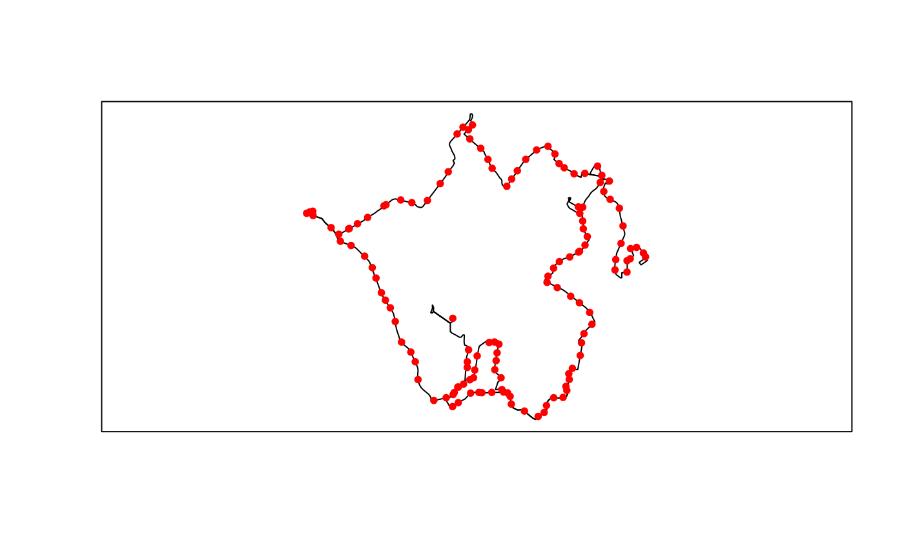
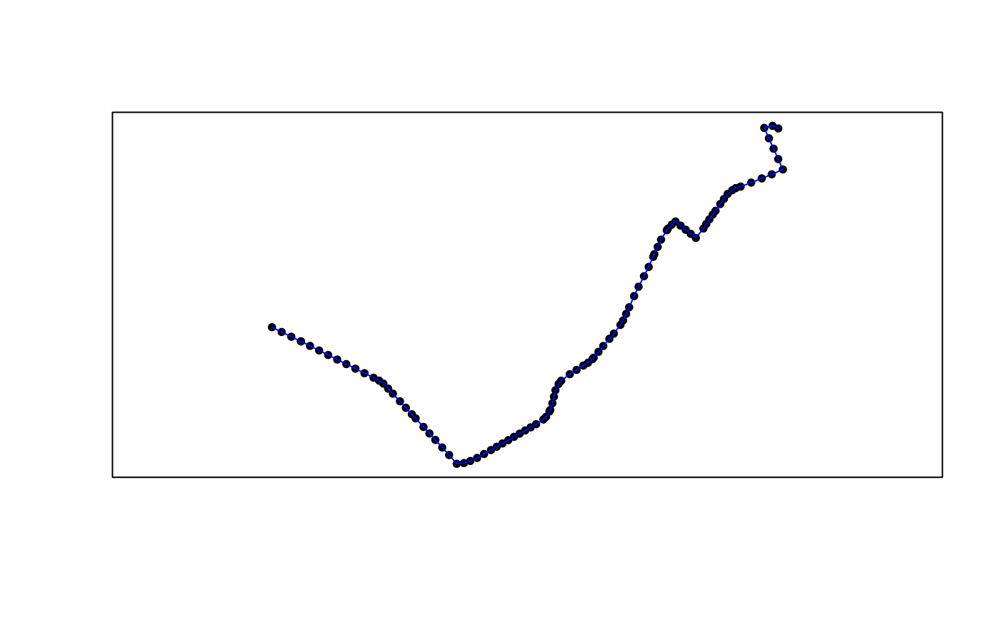

gtfs2gps: Converting GTFS data to GPS-like format
Rafael H. M. Pereira, Pedro R. Andrade, Joao Bazzo
Source:vignettes/intro_to_gtfs2gps.Rmd
intro_to_gtfs2gps.RmdAbstract
Packagegtfs2gps has a set of functions to convert public transport GTFS data to GPS-like format using data.table. It also has some functions to subset GTFS data in time and space and to convert both representations to simple feature format.
18 August 2020
Introduction
Package gtfs2gps allows users to convert public transport GTFS data into a single data.table format with GPS-like records, which can then be used in various applications such as running transport simulations or scenario analyses. Before using the package, just install it from GitHub.
install.packages("gtfs2gps")Loading data
After loading the package, GTFS data can be read into R by using read_gtfs(). This function gets a zipped GTFS file and returns a list of data.table objects. The returning list contains the data of each GTFS file indexed according to their file names without extension.
library("gtfs2gps")
sao <- read_gtfs(system.file("extdata/saopaulo.zip", package ="gtfs2gps"))## Unzipped the following files to /tmp/Rtmpknhr3K/gtfsio:
## * agency.txt
## * calendar.txt
## * frequencies.txt
## * routes.txt
## * shapes.txt
## * stop_times.txt
## * stops.txt
## * trips.txt## Reading agency.txt## Reading calendar.txt## Reading frequencies.txt## Reading routes.txt## Reading shapes.txt## Reading stop_times.txt## Reading stops.txt## Reading trips.txt
names(sao)## [1] "agency" "calendar" "frequencies" "routes" "shapes"
## [6] "stop_times" "stops" "trips"
head(sao$trips)## route_id service_id trip_id shape_id
## 1: 121G-10 USD 121G-10-0 52421
## 2: 148L-10 USD 148L-10-0 52857
## 3: 148L-10 USD 148L-10-1 52858
## 4: 1720-21 USD 1720-21-0 52936
## 5: 1721-10 USD 1721-10-0 52941
## 6: 1726-10 USD 1726-10-0 52429Note that not all GTFS files are loaded into R. This function only loads the necessary data to spatially and temporally handle trips and stops, which are: “shapes.txt”, “stop_times.txt”, “stops.txt”, “trips.txt”, “agency.txt”, “calendar.txt”, “routes.txt”, and “frequencies.txt”, with this last four being optional. If a given GTFS zipped file does not contain all of these required files then read_gtfs() will stop with an error.
Subsetting GTFS Data
GTFS data sets can be fairly large for complex public transport networks and, in some cases, users might want to focus on specific transport services at week days/weekends, or on specific trips or routes. The package brings some functions to filter GTFS.zip and speed up the data processing.
- filter_by_shape_id(): Filter shapes using given shape ids.
- filter_by_agency_id(): Filter routes using given agency ids.
- filter_valid_stop_times(): Return only stop times that have geospatial locations.
- filter_week_days(): Remove weekend trips.
- filter_single_trip(): Return only one trip per shape_id.
- filter_by_route_type(): Filter by transport mode.
- filter_by_route_id(): Filter routes and trips by route id.
- filter_day_period(): Filter according to a time interval.
- remove_invalid(): Remove all inconsistent data, checking all relations.
These functions subset all the relevant GTFS files in order to remove all the unnecessary rows, keeping the data consistent. The returning values of the four functions is a list of data.table objects, in the same way of the input data. For example, in the code below we filter only shape ids between 53000 and 53020.
library(magrittr)
object.size(sao) %>% format(units = "Kb")## [1] "2148.6 Kb"
sao_small <- gtfs2gps::filter_by_shape_id(sao, c(51338, 51956, 51657))
object.size(sao_small) %>% format(units = "Kb")## [1] "99.8 Kb"We can then easily convert the data to simple feature format and plot them.
sao_small_shapes_sf <- gtfs2gps::gtfs_shapes_as_sf(sao_small)
sao_small_stops_sf <- gtfs2gps::gtfs_stops_as_sf(sao_small)
plot(sf::st_geometry(sao_small_shapes_sf))
plot(sf::st_geometry(sao_small_stops_sf), pch = 20, col = "red", add = TRUE)
box()
After subsetting the data, it is also possible to save it as a new GTFS file using write_gtfs(), as shown below.
write_gtfs(sao_small, "sao_small.zip")Converting to GPS-like format
To convert GTFS to GPS-like format, use gtfs2gps(). This is the core function of the package. It takes a GTFS zipped file as an input and returns a data.table where each row represents a ‘GPS-like’ data point for every trip in the GTFS file. In summary, this function interpolates the space-time position of each vehicle in each trip considering the network distance and average speed between stops. The function samples the timestamp of each vehicle every \(15m\) by default, but the user can set a different value in the spatial_resolution argument. See the example below.
## id shape_id trip_id trip_number route_type shape_pt_lon shape_pt_lat
## 1: 1 51338 5010-10-0 1 3 -46.63120 -23.66268
## 2: 2 51338 5010-10-0 1 3 -46.63117 -23.66273
## 3: 3 51338 5010-10-0 1 3 -46.63108 -23.66288
## 4: 4 51338 5010-10-0 1 3 -46.63095 -23.66316
## 5: 5 51338 5010-10-0 1 3 -46.63082 -23.66345
## 6: 6 51338 5010-10-0 1 3 -46.63111 -23.66364
## departure_time stop_id stop_sequence dist cumdist cumtime
## 1: <NA> <NA> NA 0.000000 [m] 0.000000 [m] NA [s]
## 2: <NA> 3703053 1 7.230445 [m] 7.230445 [m] NA [s]
## 3: <NA> <NA> NA 18.369274 [m] 25.599720 [m] NA [s]
## 4: <NA> <NA> NA 34.505965 [m] 60.105685 [m] NA [s]
## 5: <NA> <NA> NA 34.505965 [m] 94.611650 [m] NA [s]
## 6: <NA> <NA> NA 36.478776 [m] 131.090426 [m] NA [s]
## speed
## 1: NA [km/h]
## 2: 26.5931 [km/h]
## 3: 26.5931 [km/h]
## 4: 26.5931 [km/h]
## 5: 26.5931 [km/h]
## 6: 26.5931 [km/h]The following figure maps the first 100 data points of the sample data we processed. They can be converted to simple feature points or linestring.
sao_gps60 <- sao_gps[1:100, ]
# points
sao_gps60_sfpoints <- gps_as_sfpoints(sao_gps60)
# linestring
sao_gps60_sflinestring <- gps_as_sflinestring(sao_gps60)
# plot
plot(sf::st_geometry(sao_gps60_sfpoints), pch = 20)
plot(sf::st_geometry(sao_gps60_sflinestring), col = "blue", add = TRUE)
box()
The function gtfs2gps() automatically recognizes whether the GTFS data brings detailed stop_times.txt information or whether it is a frequency.txt GTFS file. A sample data of a GTFS with detailed stop_times.txt cab be found below:
poa <- system.file("extdata/poa.zip", package ="gtfs2gps")
poa_gps <- gtfs2gps(poa, spatial_resolution = 50)
poa_gps_sflinestrig <- gps_as_sfpoints(poa_gps)
plot(sf::st_geometry(poa_gps_sflinestrig[1:200,]))
box()Methodological note
For a given trip, the function gtfs2gps calculates the average speed between each pair of consecutive stops — given by the ratio between cumulative network distance S and departure time t for a consecutive pair of valid stop_ids (i),
\[Large Speed_i = \frac{S_{i+1}-S_i}{t_{i+1}-t_i}\]
Since the beginning of each trip usually starts before the first stop_id, the mean speed cannot be calculated as shown in the previous equation because information on i period does not exist. In this case, the function consider the mean speed for the whole trip. It also happens after the last valid stop_id (N) of the trips, where info on i + 1 also does not exist.

Final remarks
If you have any suggestions or want to report an error, please visit the GitHub page of the package here.